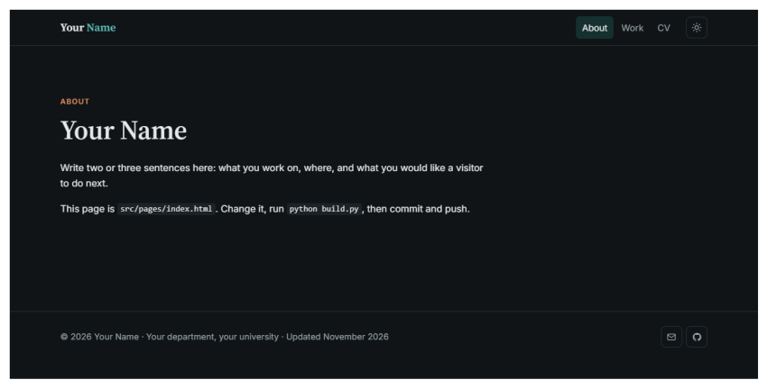
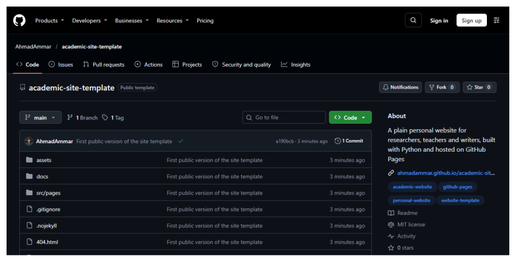
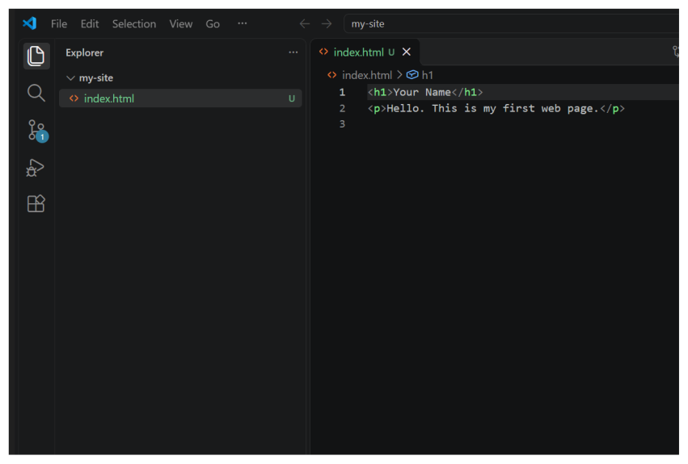
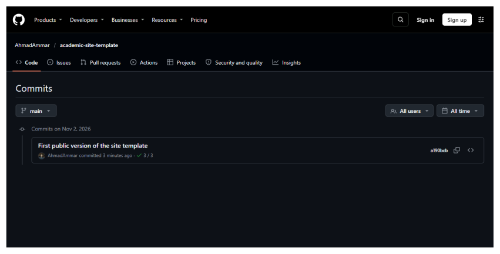

The whole guide on one page¶
1. What you will have at the end¶
By the end of this guide you will have a personal website at an address like https://your-name.github.io. It will have a home page, a page for your work and a CV page. It will work on phones and offer light and dark themes. It costs nothing to run, needs no server, and is yours to change.

The site you will start from, before you change the words. You can open it at ahmadammar.github.io/academic-site-template.
1.1 Who this is for¶
You need no experience with code. If you can install a program and follow steps in order, you can do this. Set aside about an hour for the first time, most of it spent on installing things. After that, changing a page takes a few minutes.
Everything you need is in this guide, including in the printed copy. Web addresses are written in full so you can type them.
1.2 How it works, in one paragraph¶
GitHub offers a free service called GitHub Pages. It takes the files in a repository, which is a project folder stored on GitHub, and shows them as a website. So the job has four parts: get a copy of the template, change the words on your own computer, send the changes to GitHub, and switch Pages on.
1.3 The words you will meet¶
Git and GitHub have their own vocabulary. You do not need to memorise this table, so come back to it when a word looks unfamiliar.
| Word | Meaning |
|---|---|
| Repository | A project folder whose history Git keeps. Often shortened to repo. |
| Commit | One saved version of your files, with a short note saying what changed. |
| Stage (or add) | Choosing which changes go into the next commit. |
| Push | Sending your new commits from your computer to GitHub. |
| Pull | Bringing new commits from GitHub to your computer. |
| Clone | Downloading a repository, with its history, to your computer. |
| Branch | A separate line of work, which lets you try a change without disturbing the main version. |
main |
The usual name of the main branch. |
| Fork | Your own copy, on GitHub, of someone else’s repository. |
| Pull request | A request asking a project’s maintainers to take in your changes. |
1.4 The terminal, and how to read the commands here¶
A terminal is a window where you type instructions to your computer instead of clicking. It looks severe, but it only does what you type, and most commands in this guide are safe to repeat.
In VS Code, open the Terminal menu at the top of the window and choose New Terminal. A panel opens at the bottom of the window with a line that waits for you to type. That line is called the prompt. It usually ends in > or $ and shows the folder you are in.
When this guide shows a command, type everything on that line, then press Enter. Where a block shows a line beginning $, the $ stands for the prompt, so do not type it. The lines beneath it are what the computer prints back. Yours will match closely, although codes such as 1a2b3c4 will differ.
If a command prints something you did not expect, nothing is broken. Read the message, because it usually says what to do next. To stop a command that seems stuck, press Ctrl and C together.
2. Install the tools¶
You will install three free programs and create one account. Do these once and you will not need to repeat them.
2.1 Install VS Code, the program you will write in¶
VS Code is a free text editor from Microsoft. Go to code.visualstudio.com, press the large download button, open the file you receive, and accept the choices the installer offers. On Windows, leave the box marked Add to PATH ticked, because that lets the terminal find it.

The VS Code download page. The site changes its wording from time to time, but the download button stays near the top. If a cookie notice appears, either choice is fine.
When VS Code first opens it may offer to sign you in to an assistant or to choose a theme. You can close these offers, since nothing in this guide needs them.
2.2 Install Git, the program that keeps your history¶
Git records each saved version of your files, so you can always go back. Go to git-scm.com/downloads and choose your operating system.

The Git download page. Choose Windows, macOS or Linux, then follow the instructions on the page that opens.
On Windows, run the installer and press Next on every screen, as the suggested settings are fine. On a Mac, open the Terminal application and type git --version, and the system will offer to install it. On Linux, use your system’s package manager, for example sudo apt install git.
Close VS Code and open it again so that it notices Git. Then open a terminal and tell Git who you are. Git writes this name and email on every version you save, and they become public if you publish your work.
git config --global user.name "Your Name"
git config --global user.email "you@example.org"
git config --global init.defaultBranch main
These commands print nothing when they succeed. To check, type git --version, which should print a version number.
2.3 Install Python¶
Python is a programming language, and here it runs small scripts. Go to python.org/downloads and press the yellow download button.

The Python download page. The page recognises your operating system and offers the right version.
On Windows, tick Add python.exe to PATH on the first screen of the installer before you press Install Now. It is easy to miss, and without it the terminal cannot find Python. Close and reopen VS Code, then check that it worked:
python --version
This should print a version number such as Python 3.13.0. On a Mac or on Linux, the command may be python3 instead of python. Use whichever works, wherever this guide says python.
2.4 Create a GitHub account¶
GitHub is a website that stores copies of Git projects and lets other people see them. Git is the program on your computer, and GitHub is the place online.
Go to github.com/signup. Enter your email, choose a password and pick a username. Choose the username with care, because it appears in your web addresses and is awkward to change later. Your real name, or a close form of it, works well for professional use. GitHub will send a code to your email to confirm the account. The free plan is all you need, so if you are offered a paid plan or asked to fill in a survey, you can skip it.
The first time you send work to GitHub, a window will ask you to sign in through your browser. Accept it, and your computer will remember the permission.
3. Make your own copy of the site¶
3.1 Create the repository from the template¶
Sign in to GitHub, then go to github.com/AhmadAmmar/academic-site-template. Press the green button Use this template, then choose Create a new repository.

The template’s page on GitHub. Once you are signed in, a green Use this template button appears near the top right, beside the list of files.
A form opens. Under Repository name, type your username followed by .github.io. If your username is sara-khan, the name is sara-khan.github.io. This exact form matters, because it is how GitHub knows the site belongs at your main address. Leave the repository set to Public, since free Pages sites need a public repository, then press Create repository.
3.2 Bring it to your computer¶
Your new repository is on GitHub, and now you need a copy on your computer. On its GitHub page, press the green Code button and copy the web address shown under HTTPS.
In VS Code, open the Terminal menu and choose New Terminal. Type these two commands, using your own address in the first one:
git clone https://github.com/your-name/your-name.github.io.git
code your-name.github.io
The first command downloads the project into a new folder. The second opens that folder in VS Code. If the second one fails, use the File menu, choose Open Folder, and pick the new folder.

VS Code with a project open. The files are listed on the left, and the file you click opens on the right.
If VS Code asks whether you trust the authors of the files, say yes, since these are files you just chose to download.
3.3 What the files are¶
| File or folder | What it holds |
|---|---|
site.toml |
Your name, address, menu and links. Start here. |
src/pages/ |
The words of each page. You will edit these. |
assets/ |
The look of the site. Leave it alone at first. |
build.py |
A small program that wraps your words in the layout. |
index.html, cv.html and others |
The finished pages, which build.py writes. Do not edit these by hand, because the next build replaces them. |
4. Make it yours¶
4.1 Put your details in site.toml¶
Click site.toml in the list on the left. Change the words inside the quotation marks, and keep the quotation marks themselves. The url line must be your own address.
name = "Sara Khan"
url = "https://sara-khan.github.io"
affiliation = "Department of Geography, Example University"
Lower down, the social lines set the small icons at the bottom of each page. Change the email address and the GitHub address, and delete a whole line if you do not want that icon. Save with Ctrl and S, or Cmd and S on a Mac. A white dot on the file’s tab means it has unsaved changes.
4.2 Write your home page¶
Open src/pages/index.html. The lines above the --- describe the page, and everything below it is what visitors read. Text sits between tags, which are the words in angle brackets. <h1> marks the main heading, <h2> a smaller heading, and <p> a paragraph. A link looks like this:
<p>I study rivers at <a href="https://example.org">Example University</a>.</p>
Change the words and keep the tags. Then do the same in work.html and cv.html.
4.3 Build the site and look at it¶
The pages you edit are the raw material, so you now run the program that makes the finished site. In the terminal, type:
python build.py
python -m http.server 8000
The first command writes the finished pages. The second serves them on your own computer only. Open a browser and go to http://localhost:8000, and you will see your site. Nobody else can see this version.
When you have finished looking, click in the terminal and press Ctrl and C to stop the second command. Each time you change something, run python build.py again and refresh the browser.
4.4 Add a page, if you want one¶
To add a page about your teaching, make a new file, src/pages/teaching.html, that begins like this:
title: Teaching
description: Courses I teach.
nav: teaching
out: teaching.html
---
<section class="prose" style="padding:3rem 0">
<h1>Teaching</h1>
<p>Write about your courses here.</p>
</section>
Then add a line to the menu in site.toml, in the same form as the others:
{key = "teaching", label = "Teaching", href = "teaching.html"},
5. Publish it¶
5.1 Save a version and send it to GitHub¶
Publishing takes three commands. git add chooses what to save, git commit saves a version with a note, and git push sends it to GitHub. First, ask Git what has changed:
$ git status
On branch main
No commits yet
Untracked files:
(use "git add <file>..." to include in what will be committed)
index.html
nothing added to commit but untracked files present (use "git add" to track)
Your list will be longer, but it will have the same form. Files in red are changes that are not yet chosen. Now choose everything and save a version. The words in quotation marks are your note, so say what you did.
git add .
git commit -m "Add my details and first pages"
git push
The full stop after add means everything in this folder. Here is what the same steps printed for a small example with one file:
$ git add index.html
$ git commit -m "Add my first page"
[main (root-commit) cc3dbdc] Add my first page
1 file changed, 1 insertion(+)
create mode 100644 index.html
$ git push -u origin main
branch 'main' set up to track 'origin/main'.
To https://github.com/your-name/your-name.github.io.git
* [new branch] main -> main
The first time, a window will ask you to sign in to GitHub. Choose to sign in with your browser. If Git says Please tell me who you are, go back to the install chapter and run the two git config lines.
5.2 Switch on GitHub Pages¶
On your repository’s GitHub page, press Settings in the row of tabs near the top. In the list on the left, press Pages. Under Build and deployment, set Source to Deploy from a branch. Under Branch, choose main and the folder / (root), then press Save.
5.3 See it online¶
GitHub now needs a minute or two to publish. To watch, press the Actions tab of your repository, where a yellow dot means it is working and a green tick means it has finished. Then open https://your-name.github.io. If you see an error page, wait two minutes and refresh, because a new site takes a moment to appear.
Your site is now public, and anyone with the address can read it.
5.4 The routine from now on¶
Every later change follows the same few steps, and this is all you need day to day:
python build.py
git add .
git commit -m "Say what changed"
git push
Each commit is kept, so you can see every earlier version in the repository’s Commits page. Should you break something, the old version is still there.

The list of saved versions on GitHub. Each entry shows its note and date, and can be opened to see exactly what changed.
6. When something goes wrong¶
| What you see | What to do |
|---|---|
python is not recognised |
Python is missing from the PATH. Run the installer again, tick Add python.exe to PATH, then close and reopen VS Code. On a Mac or on Linux, try python3. |
git is not recognised |
Close and reopen VS Code. If that does not help, install Git again. |
| Please tell me who you are | Run the git config lines with your name and email, then repeat the commit. |
| nothing to commit | Git sees no changes. Check that the file is saved and that you ran python build.py. |
| failed to push and fetch first | GitHub has a version you do not, perhaps from an edit on the website. Run git pull, then git push. |
| The site shows a 404 page | Check the repository is named exactly your-name.github.io, that it is public, and that Pages is set to the main branch. Then wait two minutes. |
| The site looks unchanged | Your browser may be showing a saved copy. Hold Ctrl (Cmd on a Mac) and press R. |
| The page has no colours or layout | Check that the url line in site.toml is right and that the assets folder is still there. |
| A word in my page looks strange | An angle bracket or tag may be unclosed. Compare it with the sample tags in the chapter on making the site yours. |
6.1 Taking a newer version of the theme¶
The template’s look is kept apart from your words, and its versions are listed in CHANGELOG.md in the template repository. To take a newer theme, download the new assets folder and build.py, replace yours, and run python build.py. Your site.toml and src/pages stay as they are.